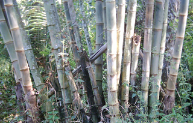
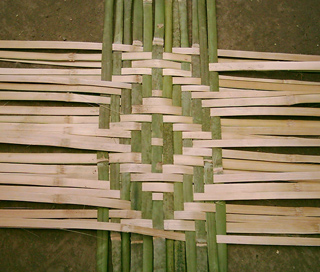
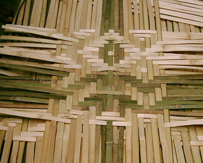

Bamboo Construction
Construction of the panels is not that difficult as the below photos show. More important, in my humble opinion, is the vision that goes into designing the patterns with only convex and concave strips, with the two colors of convex strip. Here is the sequence for making bamboo panels.| After harvesting, bamboo is cut into 2-meter length poles. |  |
| Bamboo pole is cut lengthwise into 1-centimeter wide strips. | |
| Each strip is split on the thickness into four or more pliable strips. That means less than one-fourth of the strips start with the dark green color. | |
| Strips are then woven into panels 1 x 2 meters. | |
| Panels are delivered to the construction site for use. | |
| A few more designs in the making. |  |  |

| To be continued . . . . |
| back:Bamboo Homes in Bagan | ||
| Other Special Subjects: |